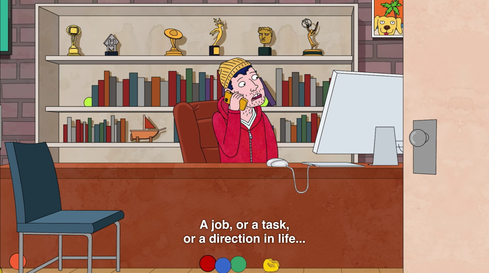
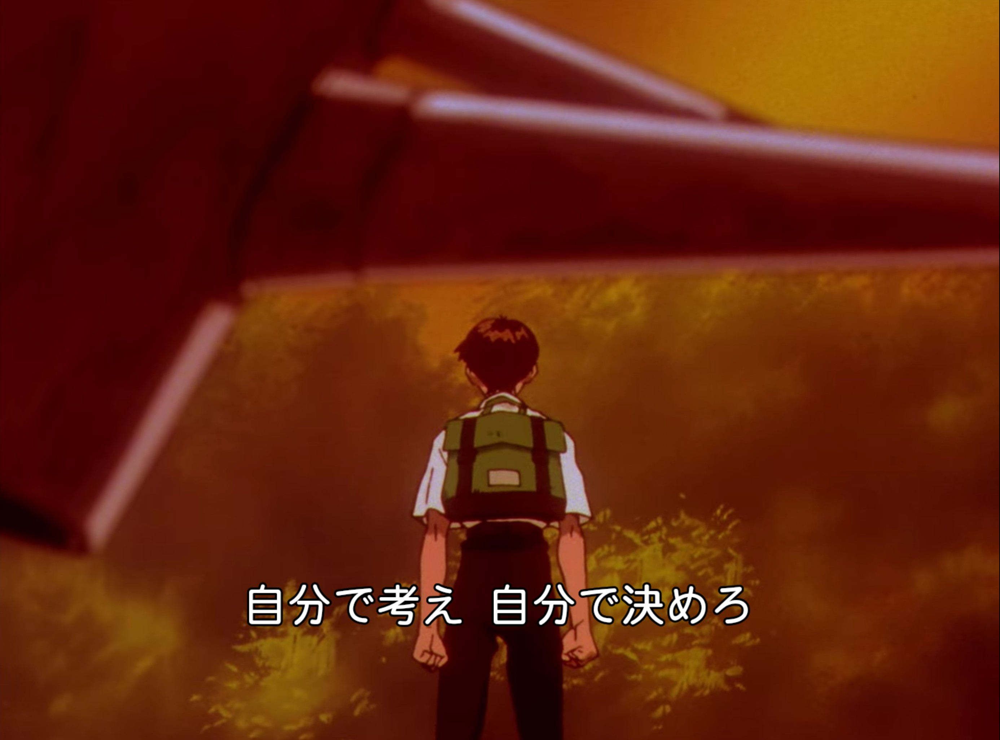
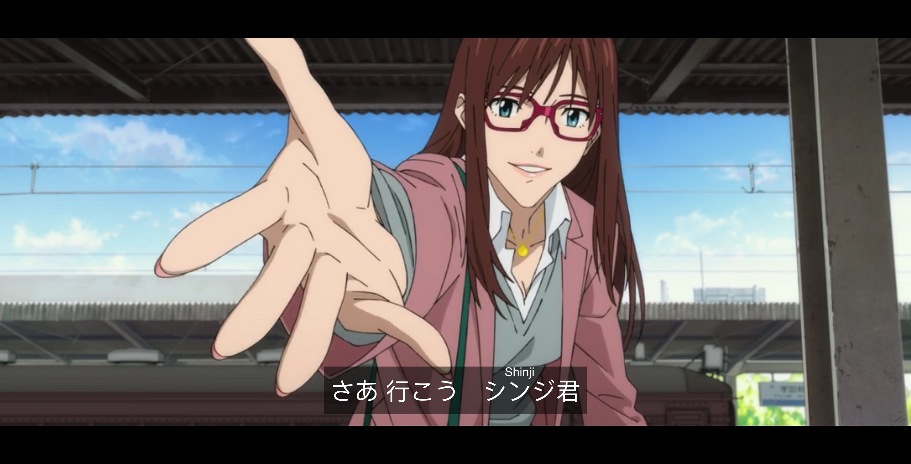

笑ってよ 笑ってよ
この写真みたく
笑ってよ 笑ってよ
飾りつけてあげる
笑ってよ 笑ってよ
【sayonarawoiwazuni/椎名もた】
动漫
印象最深的是两部作品，一部是《Bojack Horseman》，另一部是《EVA》新剧场版终。
先讲前者，我单独写过一篇文章 (咸鱼与存在) 讲这部作品对我的影响。简而言之，看这部作品的时候，我处于 Bojack Horseman 的那种状态，怀疑自己的存在价值，对这个世界失去了一点兴趣。是这部作品打开了我对存在主义这个观念的大门，让我有幸开始了解一点 20 世纪以来的一些思想。写完那篇文章后，已经半年过去了，我有变好吗？当然有一点，至少不是 Bojack Horseman 以前那种虚无的状态了。但有时候还是走入另一个极端 – Todd 那样的状态：尽管对生活的态度好了很多，可有时候真不知道该干些什么。应该说，我之前怀疑自己的存在也是因为自己不知道该做什么，认为一切没有价值，只不过现在态度变得积极了一点，愿意接受这个事实了：而对自己该干什么这件事仍然不清楚。
在第二季的第 5 集里，Todd 这么问 Princess Carolyn: “Princess Carolyn, I need something to do. A job, a task, or a direction in life…You’re my agent. Can you give my life meaning? … Princess Carolyn, do I have a purpose?”
Todd
对于有时自己不知道自己该干些什么这件事，我有时候会感到些许羞愧。毕竟再过几年都要成为大魔法师了，而我还像个小孩子一样不成熟。现在想着，不管怎样，至少也该培养点兴趣，就像碇真嗣，即便他一度擅长逃避，也会在空闲时间拉一下大提琴，不至于无所事事。
说到 EVA，在看完那部终之后，我也写了一篇文章 – 关于 EVA 终的感想。我其实也才去年开始看 EVA，几乎是在一年内把 TV，旧剧场版，新剧场版看完了。面对三个结局，我心里其实更偏爱一点 TV 版的结局。当然，旧剧场版和新剧场版的结局也是很好的结局，至少这两者都真的把故事讲下去了，把故事讲完了，只不过前者表现得阴暗和消极了一点，应该算一个 Bad Ending，而后者则非常的明朗和积极，是一个非常棒的 Good Ending。与一些人的想法相反，我觉得 TV 版的结局反到十分直白，直白到直接把大道理都摆出来了：“現実を悪く嫌だと捉えているのは、君の心だ。”、“人の顔色ばかり うかがう必要なんてないのよ”、“自分が嫌いな人は他人を好きに信頼するようになれないわ”。配上结尾的 BGM《Good, or Don’t Be.》，我觉得制作组，尤其是庵野秀明，是真心希望那些厌恶自己，不敢面对世界的人能够喜欢自己，能够乐观地面对世界。
这个结尾，成为了这一年常常刷的一个片段。另一个经常刷的片段则是 TV 版里第 19 集里加持良治在西瓜田与真嗣的对话：
シンジ君、俺はここで水をまくことしかできない、だが 君には 君にしかできない 君にならできることがあるはずだ、誰も君に強要はしない、自分で考え、自分で決めろ、自分が今何をすべくなのか、まあ 後悔のないようにな。
真嗣，我只能在这里浇水。不过有一件只有你才能做到，而且是你一定能做到的事。没有人强迫你，自己思考，自己决定，自己现在应该做什么。总之，别让自己后悔。
在我看来，这是真嗣第一次自己思考并得出结论为什么要驾驶 EVA。在这之前，美里带他去看第三新东京市的升起，告诉他是为了保护这座城市而驾驶 EVA；而司令什么也没告诉。他询问其他驾驶员并试图得出答案，但这都是她们自己的想法，终究不是碇真嗣自己思考出来的结论，不能对真嗣有任何的帮助。
同时，在破里，没有加持在西瓜田边与真嗣的对话，取而代之的是美里对真嗣说：不是为了别人，而是为了自己。
当看 “破” 这部剧场版的时候，正好也在看 Escape from Freedom (逃避自由) 和 Courage to be disliked (被讨厌的勇气) 这两本书，恰好也讲到 “选择” 这个问题。与加持对话时，这更明显一点：选择逃避，那么就要承担全人类毁灭的后果，毁灭之后也不会有人指责他；选择战斗，承担起一个 EVA 驾驶员的责任。加持的这段话就妙在没有像司令或美里那样强迫他，而是告诉了真嗣两种后果，让真嗣自己选择，让真嗣在那一瞬间拥有了一种选择的自由。换做其他人，比如美里，大概率会像在旧剧场版里一样直接要求真嗣去驾驶 EVA。
E19
工作
升了一级。从 L3 变成了 L4，不过这算不上什么值得惊喜或高兴的事。我已经工作两年了，今年不升的话，明年也会升。从 L3 到 L4 这一级的变化，我感觉不是什么意料外的事，如果早两年做的项目足够难和有影响力，那么就会早点升，不然 3 年时间做那么多东西，影响力也足够到 L4。
去年在总结里也谈到了对工作的想法。今年相较去年，一个变化是组员变多了，组内的内容以及随着项目推进，和组内以及组外的沟通更多了，写会议文档和设计文档的时间也更多了。对于写代码时候变少这件事，我倒没什么担忧，算是意料之内的事。如果写代码时间减少是因为把设计和沟通做好，减少了返工，那自然最好的。
生活
搬了一次家 搬家可太累了
一位室友因换办公室而退租，本来三个人变成两个人。于是和剩下的室友换了一个 apartment。新的住处虽然比以前稍显朴素，但空间上似乎更加得当了。本来就不常用的客厅和厨房占地面积小了，把足够的空间留给了卧室。
去旅游
一是去了国家公园。Yosemite, Sequoia & Kings Canyon 打卡式两日游。
二是去了 Los Angelas 和 San Diego。本来写了篇文章，不过感觉这次旅游体验一般，文章也没国家公园那篇写得好，于是就没发。
三是去了 Santa Curz。花了一个下午和朋友们钓螃蟹，可惜没有钓到。第一次看到了码头的加州海狮。
没想到自己会在今年出去旅行。我虽然不讨厌旅游，但一般极少主动花几天甚至一天旅游。总体上这几次旅游都挺满意的。
其它
文章
恢复一点更新。大部分是书评和一些生活记录。也就一篇关于标点符号的文章勉强算是技术相关的文章。
日语
去年说今年考 N2。但没怎么刻意准备，平时也就积累一点看漫画看到的词汇。SF 的考场也取消了。关于 JLPT，就暂时放放吧。
游戏
和前两年差不多，主要还是 《Splatoon 2》，《塞尔达传说 – 旷野之息》以及《动物森友会》。
《Splatoon 2》目前最佳成绩是鱼模式 2349.9 分，排位预估 8124 名，使用的武器是贴牌重桶。希望《Splatoon 3》里还保留这款武器。

それから
相比去年，今年过的还挺平稳，总体上也比去年舒坦很多，少有的超过上一年的预期了，也少有的没有留下什么遗憾。
挺好的，没什么留念，进入下一年吧。
さあ 行こう